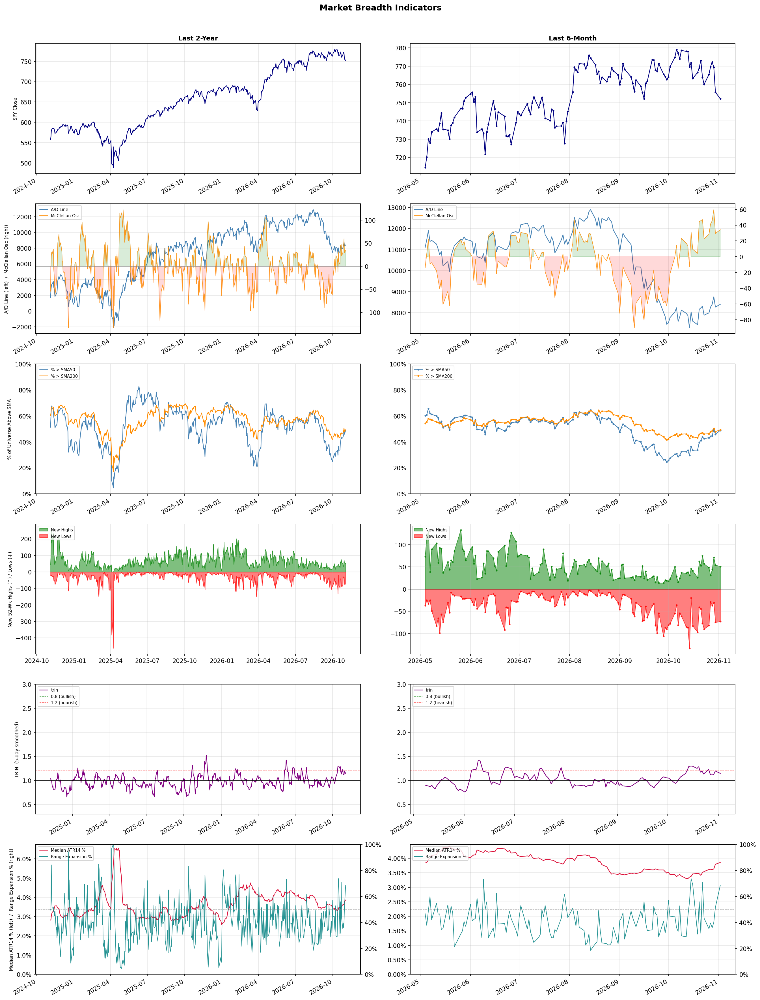

A daily market breadth and sector rotation report for active investors
| Item | Read |
|---|---|
| Regime | Neutral |
| Risk posture | Cautious |
| Universe | 1,317 stocks tracked · 51 new 52-week highs · 30 active swing setups |
| Breadth | only 48.9% of tracked stocks are above SMA50, new lows exceed new highs (73 vs 51) |
| Leadership | Discount Stores, REIT - Hotel & Motel, and Insurance Brokers |
| Weakest groups | Uranium, Other Industrial Metals & Mining, and Semiconductor Equipment & Materials |
Use this report to prioritize research and chart review; validate entries, stops, liquidity, earnings, and risk before acting.
| Item | Read |
|---|---|
| Primary read | Neutral regime with Cautious risk posture. |
| Research queue | BJ, WMT, COST, DG, DLTR |
| Leadership focus | Discount Stores, REIT - Hotel & Motel, and Insurance Brokers |
| Caution list | Uranium, Other Industrial Metals & Mining, and Semiconductor Equipment & Materials |
| Review prompt | Check extension risk, chart location, fundamentals, valuation, and earnings before using any research row. |
| Item | Read |
|---|---|
| Primary read | 4 active risk warnings; use screen output as watchlist input only. |
| Bullish screens | BJ, AJG, MRSH, PFE, CCEP |
| Bearish screens | COIN, LMND, BTDR |
| Alerts / levels | Automated trigger, stop, ATR, liquidity, reward/risk, and event-risk levels are pending future enrichment. |
| Review prompt | Open the linked chart, define trigger and invalidation, then check liquidity and event risk independently. |
Risk Posture: Cautious — screen backdrop is selective; prioritize research in top-ranked groups
Metric context: McClellan below -50 = elevated selling pressure; below -100 = washout territory. Range Expansion = share of stocks with daily range above their 20-day average. Signal Density = share of tracked names appearing in signal screens.
| Breadth Date | % > SMA50 | % > SMA200 | New Highs | New Lows | McClellan | Median Range | Avg Range | Median ATR14 | Range Expansion | Signal Density |
|---|---|---|---|---|---|---|---|---|---|---|
| 2026-11-02 | 48.9% | 49.3% | 51 | 73 | 34.2 | 4.0% | 5.0% | 3.9% | 68.6% | 13.2% |

Prior comparison date: October 30, 2026
| Metric | Prior | Current | Change |
|---|---|---|---|
| Regime | Neutral | Neutral | unchanged |
| Risk Posture | Cautious | Cautious | unchanged |
| % > SMA50 | 46.0% | 48.9% | +2.9 pts |
| % > SMA200 | 47.9% | 49.3% | +1.5 pts |
| New Highs | 53 | 51 | -2 |
| New Lows | 76 | 73 | +3 |
Top-10 industries entering: Beverages - Non-Alcoholic, Restaurants, and Specialty Retail. Top-10 industries leaving: Medical Care Facilities, Oil & Gas E&P, and Oil & Gas Integrated. New multi-signal long setups: AER, AMCR, AMH, BALL, CCEP, D, ECL, IBN. New multi-signal short setups: BTDR, COIN.
| Status | Tickers | Read |
|---|---|---|
| Added | AER, AMCR, AMH, BALL, BTDR, CCEP, COIN, D | New technical screen matches vs prior report. |
| Removed | ABBV, AEE, AFL, AHR, AMGN, COP, CVX, DUK | No longer present in today's technical screen matches. |
| Still Active | AJG, BJ, CB, CROX, MA, MRSH, OMC, REPL | Appeared in both current and prior reports. |
| Promoted | BJ | Model Screen Score improved by at least 15 points. |
| Downgraded | none | Model Screen Score declined by at least 15 points. |
| Direction | Industry | ETF | Prior Rank | Current Rank | Days | Rank Change |
|---|---|---|---|---|---|---|
| Rose | Restaurants | N/A | 81 | 9 | 42 | +72 |
| Rose | Apparel Manufacturing | N/A | 74 | 4 | 42 | +70 |
| Rose | Footwear & Accessories | N/A | 79 | 16 | 42 | +63 |
| Rose | Leisure | N/A | 84 | 25 | 42 | +59 |
| Rose | Utilities - Regulated Electric | XLU | 76 | 19 | 42 | +57 |
Bull: The rising relative strength of the restaurant industry can be attributed to the resilience of consumer spending in the face of economic fluctuations, as suggested by the bullish outlook from analysts despite recent stock tumbles. Factors such as strategic investments highlighted in the "5 Best Restaurant ETFs for 2026" and the potential for recovery in dining traffic, as indicated by Darden Restaurants' performance compared to the broader consumer discretionary sector, suggest that savvy investors are identifying opportunities amid temporary setbacks, positioning the industry for future growth.
Bear: While the rising relative strength may seem promising, it masks underlying issues such as softening dining traffic, as evidenced by the recent reports of decreased consumer footfall and the significant drop in stocks like Cheesecake Factory. Furthermore, the notion of resilience in consumer spending may be overstated; economic uncertainties and inflationary pressures could lead to reduced discretionary spending, making the restaurant sector vulnerable to further declines rather than a robust recovery.
Verdict: The restaurant industry's rising relative strength is primarily driven by resilient consumer spending and strategic investments that position it for future growth, despite recent stock fluctuations. However, a key risk lies in the potential for softening dining traffic and economic uncertainties, which could lead to decreased discretionary spending and further declines in the sector. Investors should closely monitor consumer behavior and macroeconomic indicators to gauge the sustainability of this upward trend.
Sources: Google News
Bull: The Apparel Manufacturing sector is experiencing a rise in relative strength due to strengthening industry trends, as highlighted by multiple sources that emphasize the positive outlook for textile and apparel stocks in 2026. Key drivers include a shift in sourcing dynamics away from China, as noted in The Economic Times, which could lead to improved margins and competitive advantages for companies that adapt effectively. Additionally, the recognition of top-performing apparel stocks by outlets like The Motley Fool and Forbes indicates growing investor confidence in the sector's potential for growth amidst evolving trade deals and consumer demand.
Bear: While the apparel manufacturing sector may currently exhibit rising relative strength, this trend could be misleading due to broader economic uncertainties and potential supply chain disruptions. The shift away from China for sourcing may not yield the anticipated benefits, as alternative regions may struggle with infrastructure and labor issues, ultimately leading to increased costs rather than improved margins. Furthermore, the optimistic projections for 2026 may overlook the potential for changing consumer preferences and economic conditions that could dampen demand for apparel, making it a risky investment environment despite the current positive sentiment.
Verdict: The apparel manufacturing sector is experiencing a rise in relative strength primarily due to a strategic shift in sourcing dynamics away from China, which is expected to enhance margins and competitive positioning for adaptable companies. However, investors should be cautious of the bear case's key risk: potential supply chain disruptions and increased costs from alternative sourcing regions, coupled with the uncertainty of changing consumer preferences that could impact demand. It is advisable to closely monitor these factors when considering investments in this sector.
Sources: Google News
Bull: The Footwear & Accessories sector is experiencing rising relative strength primarily due to increasing investor interest in sustainable practices, as highlighted by the new EU regulations aimed at preventing the destruction of unsold clothes and shoes. This regulatory shift not only aligns with growing consumer demand for environmentally responsible products but also positions companies in this sector to capitalize on sustainability trends, as noted in multiple articles discussing top shoe stocks for the future. Additionally, the overall bullish sentiment around retail apparel and footwear stocks suggests that investors are recognizing the potential for growth and innovation within this industry, further reinforcing its upward momentum.
Bear: While the rising relative strength in the Footwear & Accessories sector may seem promising, it is crucial to consider the potential negative impact of the new EU regulations on profitability. The ban on destroying unsold inventory could lead to increased costs for companies that must now find alternative solutions for excess stock, such as recycling or donation, which may not be financially viable for all players. Additionally, the heightened focus on sustainability could create a crowded market where only a few brands succeed, leaving many companies struggling to differentiate themselves and maintain margins in a competitive landscape.
Verdict: The Footwear & Accessories sector is gaining momentum due to increasing investor interest in sustainability, driven by new EU regulations that align with consumer demand for eco-friendly products. However, the key risk lies in the potential profitability challenges posed by these regulations, as companies may face higher costs associated with managing unsold inventory, leading to a crowded market where differentiation becomes difficult. Investors should closely monitor how companies adapt to these regulatory changes while maintaining their competitive edge.
Sources: Google News
Bull: The Leisure sector is experiencing rising relative strength primarily due to a robust recovery in travel and tourism, as highlighted by articles emphasizing growth opportunities in travel stocks and the positive earnings reports from companies like Brunswick. Additionally, consumer discretionary spending is shifting towards leisure activities, indicating strong demand despite broader industry pressures, as noted in the analysis of Q2 earnings and the focus on growth stocks within the leisure space. This trend suggests that consumers are prioritizing leisure experiences, driving growth and investor interest in the sector.
Bear: While the leisure sector may currently exhibit rising relative strength and some signs of recovery, this optimism overlooks significant cyclical headwinds that could dampen future growth. Factors such as rising inflation, increasing interest rates, and potential economic downturns could lead to reduced consumer discretionary spending, particularly in non-essential areas like leisure. Furthermore, the recent earnings reports, while positive for some companies, may not be indicative of a sustained trend, as they could reflect temporary boosts rather than long-term stability in the face of broader economic challenges.
Verdict: The leisure sector's rise is fundamentally driven by a robust recovery in travel and tourism, coupled with a shift in consumer discretionary spending towards leisure activities, indicating strong demand. However, key risks remain, particularly from rising inflation and interest rates, which could constrain consumer spending and dampen growth prospects in the sector. Investors should monitor macroeconomic indicators closely to assess the sustainability of this trend.
Sources: Google News
Bull: The Utilities - Regulated Electric sector is experiencing rising relative strength due to increasing investor confidence in stable dividend yields and the anticipated growth in power demand, as highlighted by multiple sources like Morningstar and The Motley Fool. With a focus on long-term investments, particularly for 2026, the sector is benefiting from a favorable macroeconomic environment characterized by rising energy consumption and a shift towards sustainable energy sources, which positions these utility stocks as attractive options for both income and growth.
Bear: While the utilities sector may currently exhibit rising relative strength and investor confidence, this optimism overlooks several critical headwinds. Regulatory pressures and potential policy shifts aimed at accelerating the transition to renewable energy could impose significant costs on traditional utility companies, potentially eroding profit margins. Additionally, rising interest rates may dampen the appeal of utility stocks, which are often seen as bond proxies, leading to a potential decline in their valuations as investors seek higher yields elsewhere.
Verdict: The Utilities - Regulated Electric sector is experiencing rising relative strength primarily due to increasing investor confidence in stable dividend yields and the expected growth in power demand, driven by a favorable macroeconomic environment and a shift toward sustainable energy sources. However, key risks include regulatory pressures and rising interest rates, which could squeeze profit margins and diminish the attractiveness of utility stocks as bond proxies, potentially leading to a decline in valuations. Investors should remain cautious and monitor these regulatory developments and interest rate trends while considering long-term positions in the sector.
Sources: Google News
| Direction | Industry | ETF | Prior Rank | Current Rank | Days | Rank Change |
|---|---|---|---|---|---|---|
| Fell | Semiconductor Equipment & Materials | SOXX | 4 | 85 | 28 | -81 |
| Fell | Computer Hardware | XLK | 5 | 83 | 35 | -78 |
| Fell | Electronic Components | XLK | 6 | 81 | 28 | -75 |
| Fell | Semiconductors | SOXX | 7 | 77 | 35 | -70 |
| Fell | Capital Markets | KCE | 8 | 76 | 42 | -68 |
Bear: While profit-taking may explain some of the recent declines, the fundamental issues facing the Semiconductor Equipment & Materials sector suggest deeper concerns. The persistent uncertainty in the chip equipment outlook, driven by potential overcapacity, geopolitical tensions affecting supply chains, and waning demand from key customers, indicates that the bearish sentiment is not merely a reaction to short-term market fluctuations but rather a reflection of underlying vulnerabilities that could hinder long-term growth prospects. Additionally, the significant drops in major players like Applied Materials and Axcelis Technologies signal a broader loss of investor confidence in the sector's ability to sustain its previous momentum.
Bull: The recent decline in the Semiconductor Equipment & Materials sector's relative strength can be attributed to a combination of profit-taking after a strong performance in the previous year and uncertainty surrounding the chip equipment outlook. Headlines indicate a sector-wide sell-off, with significant drops in major players like Applied Materials and Axcelis Technologies, as investors react to concerns about future demand and market conditions, leading to a bearish sentiment despite the long-term growth potential of the industry.
Verdict: The recent decline in the Semiconductor Equipment & Materials sector is primarily driven by profit-taking following a strong performance last year, compounded by significant concerns about future demand and potential overcapacity. However, the key risk highlighted by the bear thesis is the persistent uncertainty surrounding geopolitical tensions and supply chain vulnerabilities, which could undermine investor confidence and hinder the sector's long-term growth prospects. Investors should closely monitor these macroeconomic factors and adjust their positions accordingly to mitigate potential losses.
Sources: Google News
Bear: While the focus on emerging technologies like quantum computing and AI is indeed gaining traction, this shift may detract from the fundamental challenges facing the broader computer hardware industry, such as supply chain disruptions, rising production costs, and diminishing margins. Additionally, the surge in specific stocks like Super Micro Computer may not reflect a sustainable trend but rather a temporary market reaction, masking the underlying issues of stagnation and declining demand for traditional hardware products. Investors should be cautious, as reallocating capital to perceived growth sectors could lead to overvaluation and increased volatility, ultimately undermining the stability of the hardware industry as a whole.
Bull: The Computer Hardware industry is experiencing a decline in relative strength primarily due to the market's increasing focus on emerging technologies such as quantum computing and artificial intelligence, as highlighted in recent headlines. The emphasis on "The Best AI Stocks to Buy Now" and the spotlight on quantum computing stocks suggest that investors are reallocating capital towards these high-growth sectors, which may be perceived as more innovative and lucrative compared to traditional hardware companies. Additionally, the mention of specific stocks like Super Micro Computer surging amid a sector-wide rally indicates that while some companies may thrive, the overall hardware sector is struggling to keep pace with the rapid advancements and investor interest in AI and quantum technologies.
Verdict: The Computer Hardware industry is experiencing a decline in relative strength primarily due to the market's increasing focus on emerging technologies such as quantum computing and artificial intelligence, as highlighted in recent headlines. The emphasis on "The Best AI Stocks to Buy Now" and the spotlight on quantum computing stocks suggest that investors are reallocating capital towards these high-growth sectors, which may be perceived as more innovative and lucrative compared to traditional hardware companies. Additionally, the mention of specific stocks like Super Micro Computer surging amid a sector-wide rally indicates that while some companies may thrive, the overall hardware sector is struggling to keep pace with the rapid advancements and investor interest in AI and quantum technologies.
Sources: Google News
Bear: While the bull analyst attributes the relative weakness in the Electronic Components sector to broader market dynamics and specific stock performances, this overlooks the fundamental challenges facing the industry, including supply chain disruptions and rising input costs that could persist in the near term. Furthermore, the focus on memory stocks may indicate a broader shift in investor sentiment towards high-growth areas, potentially leaving traditional electronic components companies struggling to attract capital and innovate amidst increasing competition and market saturation. This suggests that the sector's declining relative strength may be more indicative of deeper structural issues rather than temporary market dynamics.
Bull: The relative weakness in the Electronic Components sector can be attributed to broader market dynamics, including the recent focus on memory stocks, which are currently driving investor interest and capital flow away from traditional electronic components. Additionally, while companies like Amphenol are performing well, the overall sentiment may be tempered by mixed earnings reports across the sector, as indicated by the comparisons made between nLIGHT and its peers. Furthermore, the upgrade of the Thai electronic components sector to Overweight suggests a regional divergence, which may be impacting the relative strength of the U.S. electronic components market.
Verdict: The Electronic Components sector's decline appears to be driven by fundamental challenges, including persistent supply chain disruptions and rising input costs, which are exacerbating competition and market saturation. While the bull thesis attributes the weakness to temporary market dynamics, the bear case highlights a critical risk: a potential long-term shift in investor sentiment towards high-growth sectors, which could further hinder traditional electronic component companies from attracting necessary capital and innovation. Investors should closely monitor these structural issues and consider diversifying into sectors with stronger growth prospects.
Sources: Google News
Bear: While the current decline in semiconductor stocks may appear to present a buying opportunity due to lower valuations, the underlying issues are far more concerning. The plummet in Intel's shares and the overall sector's weakness highlight significant operational challenges and competitive pressures that are unlikely to be resolved quickly, especially with ongoing geopolitical tensions and uncertainties surrounding AI spending. Moreover, the potential for further declines in demand, particularly from key markets like China, could exacerbate the sector's struggles, making it a risky investment rather than an attractive one.
Bull: The semiconductor sector is experiencing a decline in relative strength primarily due to heightened concerns over AI spending and geopolitical tensions impacting supply chains, particularly with China, as indicated by the recent reports on memory chip stocks and Intel's significant losses. These factors have contributed to a bearish sentiment, leading to a sell-off in semiconductor stocks, which are now trading at lower valuations compared to the broader S&P 500, creating a potential buying opportunity for investors.
Verdict: The semiconductor industry's recent decline is primarily driven by heightened concerns over AI spending and geopolitical tensions, particularly with China, which have negatively impacted supply chains and investor sentiment. While the lower valuations may present a buying opportunity, the key risk lies in the persistent operational challenges and competitive pressures that companies like Intel are facing, which could lead to further demand declines and exacerbate the sector's struggles. Investors should proceed with caution, closely monitoring developments in AI investments and geopolitical dynamics before making decisions.
Sources: Google News
Bear: While the bull analyst attributes the decline in the Capital Markets sector to the sell-off in AI stocks and rising oil prices, this perspective overlooks structural issues within the sector itself, such as increasing regulatory scrutiny and potential interest rate hikes that could dampen profitability. Furthermore, the sharp declines in AI stocks may indicate a broader market correction rather than a temporary setback, suggesting that investor confidence is waning across multiple sectors, not just in high-growth areas. This could lead to sustained volatility and further declines in the Capital Markets sector as investors reassess their risk appetites in a potentially tightening economic environment.
Bull: The Capital Markets sector is experiencing a decline in relative strength primarily due to the significant sell-off in AI-related stocks, which has created broader market volatility and uncertainty, as highlighted by the Reuters and The Guardian headlines. This downturn in a high-growth segment has overshadowed other sectors, leading to a cautious investor sentiment that impacts overall market resilience. Additionally, rising oil prices may be contributing to inflationary pressures, prompting investors to reassess risk across various industries, including Capital Markets.
Verdict: The Capital Markets sector's decline is fundamentally driven by heightened market volatility stemming from the significant sell-off in AI stocks, which has overshadowed broader investor sentiment and led to cautious risk reassessment. However, the key risk highlighted by the bear case is the potential for sustained declines due to structural issues such as increasing regulatory scrutiny and looming interest rate hikes, which could further dampen profitability and investor confidence across the sector. Investors should closely monitor these regulatory and economic indicators to navigate potential risks effectively.
Sources: Google News
| Industry | Rank | ETF | 7d | 14d | 28d | 42d | Chg 42d | Size | 20D | 60D | Composite | Active Setups |
|---|---|---|---|---|---|---|---|---|---|---|---|---|
| Discount Stores | 1 | XRT | 15 | 6 | 18 | 31 | +30 | 7 | 13.6% | 9.8% | 0.939 | 0 |
| REIT - Hotel & Motel | 2 | XLRE | 5 | 8 | 11 | 57 | +55 | 9 | 12.9% | 11.4% | 0.930 | 0 |
| Insurance Brokers | 3 | N/A | 7 | 14 | 33 | 35 | +32 | 6 | 14.0% | 13.6% | 0.920 | 0 |
| Apparel Manufacturing | 4 | N/A | 11 | 9 | 42 | 74 | +70 | 6 | 25.6% | 10.1% | 0.910 | 0 |
| Household & Personal Products | 5 | XLP | 6 | 5 | 24 | 30 | +25 | 12 | 12.8% | 10.6% | 0.909 | 0 |
| Specialty Retail | 6 | XRT | 13 | 16 | 23 | 48 | +42 | 13 | 15.3% | 6.9% | 0.881 | 0 |
| Drug Manufacturers - General | 7 | IHE | 19 | 23 | 30 | 29 | +22 | 14 | 11.5% | 8.5% | 0.877 | 0 |
| Beverages - Non-Alcoholic | 8 | XLP | 20 | 11 | 47 | 58 | +50 | 7 | 11.3% | 6.6% | 0.865 | 0 |
| Restaurants | 9 | N/A | 25 | 15 | 58 | 81 | +72 | 16 | 17.3% | 8.9% | 0.856 | 1 |
| Health Information Services | 10 | N/A | 8 | 7 | 2 | 3 | -7 | 12 | 4.7% | 29.6% | 0.856 | 1 |
Rank columns (7d–42d) show the industry's rank that many trading days ago — lower is stronger. Chg 42d = rank change vs 42 trading days ago — positive means the industry moved up. 20D and 60D are the mean stock return within the industry over that period. Active Setups: count of today's swing-trade candidates from this industry appearing across all signal screens.
| Industry | Rank | ETF | 7d | 14d | 28d | 42d | Chg 42d | Size | 20D | 60D | Composite | Active Setups |
|---|---|---|---|---|---|---|---|---|---|---|---|---|
| Uranium | 87 | URA | 87 | 87 | 85 | 71 | -16 | 6 | -20.8% | -34.5% | 0.024 | 0 |
| Other Industrial Metals & Mining | 86 | N/A | 86 | 82 | 78 | 54 | -32 | 21 | -23.6% | -34.6% | 0.027 | 0 |
| Semiconductor Equipment & Materials | 85 | SOXX | 77 | 67 | 4 | 36 | -49 | 17 | -30.2% | -27.2% | 0.080 | 1 |
| Electrical Equipment & Parts | 84 | XLI | 85 | 86 | 53 | 43 | -41 | 12 | -20.6% | -32.9% | 0.083 | 0 |
| Computer Hardware | 83 | XLK | 63 | 61 | 10 | 6 | -77 | 15 | -27.1% | -23.1% | 0.101 | 0 |
| Utilities - Renewable | 82 | N/A | 82 | 80 | 73 | 55 | -27 | 6 | -15.2% | -26.5% | 0.110 | 0 |
| Electronic Components | 81 | XLK | 79 | 69 | 6 | 15 | -66 | 10 | -24.2% | -22.4% | 0.111 | 0 |
| Auto Parts | 80 | N/A | 78 | 72 | 65 | 52 | -28 | 19 | -12.7% | -22.6% | 0.123 | 1 |
| Gold | 79 | GDX | 62 | 50 | 44 | 24 | -55 | 25 | -11.5% | -14.8% | 0.126 | 0 |
| Aerospace & Defense | 78 | ITA | 81 | 84 | 72 | 59 | -19 | 26 | -12.7% | -31.1% | 0.126 | 0 |
Rank columns (7d–42d) show the industry's rank that many trading days ago — lower is stronger. Chg 42d = rank change vs 42 trading days ago — positive means the industry moved up. 20D and 60D are the mean stock return within the industry over that period. Active Setups: count of today's swing-trade candidates from this industry appearing across all signal screens.
These are research candidates from top-ranked stocks, capped at five names per industry to avoid over-concentration. Returns shown (60D, 120D, 250D) are historical — they reflect where prices have already moved, not forward expectations. Extension Risk flags names that may require extra patience or a better entry point. They are not buy signals.
Chart: TV = TradingView chart (opens in browser); PDF = local chart file (if downloaded).
| Ticker | Name | Industry | Industry Rank | Market Cap | 60D Hist | 120D Hist | 250D Hist | Extension Risk | Research Reason | Chart |
|---|---|---|---|---|---|---|---|---|---|---|
| BJ | BJ's Wholesale Club Holdings | Discount Stores | 1 | N/A | 14.7% | 20.3% | 21.9% | Constructive | Top-ranked in industry | TV |
| WMT | Walmart | Discount Stores | 1 | N/A | 14.4% | -1.8% | 26.7% | Constructive | Top-ranked in industry | TV |
| COST | Costco | Discount Stores | 1 | N/A | 9.9% | 2.1% | 12.8% | Constructive | Top-ranked in industry | TV |
| DG | Dollar General | Discount Stores | 1 | N/A | 7.8% | 33.2% | 39.5% | Constructive | Top-ranked in industry | TV |
| DLTR | Dollar Tree | Discount Stores | 1 | N/A | 5.9% | 55.6% | 37.4% | Constructive | Top-ranked in industry | TV |
| PEB | Pebblebrook Hotel Trust | REIT - Hotel & Motel | 2 | N/A | 21.1% | 54.3% | 109.3% | Constructive | Top-ranked in industry | TV |
| APLE | Apple Hospitality REIT Inc | REIT - Hotel & Motel | 2 | N/A | 17.0% | 39.0% | 75.2% | Constructive | Top-ranked in industry | TV |
| DRH | DIAMONDROCK HOSPITALITY CO | REIT - Hotel & Motel | 2 | N/A | 16.9% | 39.7% | 89.2% | Constructive | Top-ranked in industry | TV |
| RLJ | RLJ Lodging Trust | REIT - Hotel & Motel | 2 | N/A | 16.2% | 48.4% | 98.5% | Constructive | Top-ranked in industry | TV |
| INN | Summit Hotel Properties Inc | REIT - Hotel & Motel | 2 | N/A | 10.9% | 37.3% | 44.5% | Constructive | Top-ranked in industry | TV |
| ARX | Accelerant Holdings | Insurance Brokers | 3 | N/A | 59.0% | 46.8% | 74.2% | Extended | Top-ranked in industry; extended | TV |
| AJG | Arthur J. Gallagher | Insurance Brokers | 3 | N/A | 12.7% | 42.1% | 16.1% | Constructive | Top-ranked in industry | TV |
| MRSH | Marsh | Insurance Brokers | 3 | N/A | 7.8% | 27.1% | 18.5% | Constructive | Top-ranked in industry | TV |
| BRO | Brown & Brown | Insurance Brokers | 3 | N/A | 0.9% | 29.2% | -6.7% | Constructive | Top-ranked in industry | TV |
| AON | Aon PLC | Insurance Brokers | 3 | N/A | -7.0% | 5.6% | -1.4% | Lagging | Top-ranked in industry; lagging | TV |
| FIGS | FIGS Inc | Apparel Manufacturing | 4 | N/A | 49.3% | 85.0% | 178.3% | Constructive | Top-ranked in industry | TV |
| VFC | VF Corp | Apparel Manufacturing | 4 | N/A | 30.3% | 11.6% | 40.0% | Constructive | Top-ranked in industry | TV |
| PVH | PVH Corp | Apparel Manufacturing | 4 | N/A | 6.2% | 12.8% | 21.4% | Constructive | Top-ranked in industry | TV |
| LEVI | Levi Strauss & Co. | Apparel Manufacturing | 4 | N/A | -4.9% | 8.4% | 18.3% | Lagging | Top-ranked in industry; lagging | TV |
| ZGN | Ermenegildo Zegna NV | Apparel Manufacturing | 4 | N/A | -5.9% | 14.4% | 42.3% | Lagging | Top-ranked in industry; lagging | TV |
These are technical screen matches from existing signal files. They are not trade recommendations. Trigger, stop, ATR, liquidity, reward/risk, and event risk still require separate validation until those inputs are available.
Model Screen Score is weighted by signal count, industry rank, freshness, and setup type. It is not a probability of profit, expected return, or suitability rating. Industry cap: max 3 candidates per industry.
Signal glossary: Momentum Pullback = stock in an uptrend that has pulled back 10–30% and shows re-entry conditions. MA Compression = short- and long-term moving averages converging, often preceding a directional move. Three-Day Up/Down = three consecutive closes in the same direction. New 52Wk High/Low = price reached a new annual extreme.
Chart: TV = TradingView chart (opens in browser); PDF = local chart file (if downloaded).
| Ticker | Industry | Setups | Close | Industry Rank | Signal Count | Model Screen Score | Reason | Chart |
|---|---|---|---|---|---|---|---|---|
| BJ | Discount Stores | New 52Wk High; Three-Day Up | 110.67 | 1 | 2 | 100 | Multi-signal; top industry breakout | TV |
| AJG | Insurance Brokers | New 52Wk High; Three-Day Up | 278.89 | 3 | 2 | 100 | Multi-signal; top industry breakout | TV |
| MRSH | Insurance Brokers | New 52Wk High; Three-Day Up | 205.38 | 3 | 2 | 100 | Multi-signal; top industry breakout | TV |
| PFE | Drug Manufacturers - General | New 52Wk High; Three-Day Up | 30.67 | 7 | 2 | 93 | Multi-signal; top industry breakout | TV |
| CCEP | Beverages - Non-Alcoholic | New 52Wk High; Three-Day Up | 115.58 | 8 | 2 | 85 | Multi-signal; top industry breakout | TV |
| KO | Beverages - Non-Alcoholic | New 52Wk High; Three-Day Up | 95.83 | 8 | 2 | 85 | Multi-signal; top industry breakout | TV |
| CB | Insurance - Property & Casualty | New 52Wk High; Three-Day Up | 368.98 | 15 | 2 | 85 | Multi-signal; new-high strength | TV |
| OGE | Utilities - Regulated Electric | MA Compression; New 52Wk High | 50.21 | 19 | 2 | 82 | Multi-signal; new-high strength | TV |
| TXNM | Utilities - Regulated Electric | MA Compression; New 52Wk High | 58.70 | 19 | 2 | 82 | Multi-signal; new-high strength | TV |
| CROX | Footwear & Accessories | New 52Wk High; Three-Day Up | 153.13 | 16 | 2 | 77 | Multi-signal; new-high strength | TV |
| AER | Rental & Leasing Services | MA Compression; New 52Wk High | 163.34 | 32 | 2 | 75 | Multi-signal; new-high strength | TV |
| D | Utilities - Regulated Electric | MA Compression; Three-Day Up | 67.72 | 19 | 2 | 72 | Multi-signal; compression setup | TV |
| SPG | REIT - Retail | MA Compression; Three-Day Up | 221.73 | 24 | 2 | 72 | Multi-signal; compression setup | TV |
| SDGR | Health Information Services | Momentum Pullback | 26.19 | 10 | 2 | 70 | Multi-signal; top industry pullback | TV |
| MAS | Building Products & Equipment | New 52Wk High; Three-Day Up | 83.51 | 30 | 2 | 70 | Multi-signal; new-high strength | TV |
| AMCR | Packaging & Containers | New 52Wk High; Three-Day Up | 49.02 | 37 | 2 | 70 | Multi-signal; new-high strength | TV |
| BALL | Packaging & Containers | New 52Wk High; Three-Day Up | 68.07 | 37 | 2 | 70 | Multi-signal; new-high strength | TV |
| ECL | Specialty Chemicals | New 52Wk High; Three-Day Up | 308.38 | 41 | 2 | 65 | Multi-signal; new-high strength | TV |
| STGW | Advertising Agencies | New 52Wk High; Three-Day Up | 10.77 | 50 | 2 | 65 | Multi-signal; new-high strength | TV |
| MA | Credit Services | New 52Wk High; Three-Day Up | 658.10 | 59 | 2 | 65 | Multi-signal; new-high strength | TV |
| V | Credit Services | New 52Wk High; Three-Day Up | 425.51 | 59 | 2 | 65 | Multi-signal; new-high strength | TV |
| LIN | Specialty Chemicals | MA Compression; Three-Day Up | 519.72 | 41 | 2 | 60 | Multi-signal; compression setup | TV |
| SHW | Specialty Chemicals | MA Compression; Three-Day Up | 352.37 | 41 | 2 | 60 | Multi-signal; compression setup | TV |
| AMH | REIT - Residential | MA Compression; Three-Day Up | 31.89 | 42 | 2 | 60 | Multi-signal; compression setup | TV |
| OMC | Advertising Agencies | MA Compression; Three-Day Up | 83.99 | 50 | 2 | 60 | Multi-signal; compression setup | TV |
| IBN | Banks - Regional | MA Compression; Three-Day Up | 30.06 | 54 | 2 | 60 | Multi-signal; compression setup | TV |
| REPL | Biotechnology | New 52Wk High; Three-Day Up | 19.49 | 61 | 2 | 55 | Multi-signal; new-high strength | TV |
Bearish setups — stocks making new lows or showing persistent downside patterns. Validate carefully before acting.
| Ticker | Industry | Setups | Close | Industry Rank | Signal Count | Model Screen Score | Reason | Chart |
|---|---|---|---|---|---|---|---|---|
| COIN | Financial Data & Stock Exchanges | New 52Wk Low; Three-Day Down | 137.83 | 14 | 2 | 55 | Multi-signal; new-low weakness | TV |
| LMND | Insurance - Property & Casualty | New 52Wk Low; Three-Day Down | 41.19 | 15 | 2 | 55 | Multi-signal; new-low weakness | TV |
| BTDR | Software - Application | New 52Wk Low; Three-Day Down | 6.17 | 31 | 2 | 40 | Multi-signal; new-low weakness | TV |
How To Use This Report
| Use | Purpose |
|---|---|
| Market map | Start with breadth, regime, risk warnings, and what changed since the prior report. |
| Industry scan | Use leading, deteriorating, rising, and declining industries to focus research. |
| Research queue | Treat long-term candidates as names for deeper fundamental, valuation, and chart review. |
| Technical review | Treat bullish and bearish screen matches as watchlist inputs that require independent trigger, stop, liquidity, and event-risk checks. |
| Source follow-up | Use chart links and source files to verify raw inputs before relying on any row. |
What This Report Is Not
| Not | Meaning |
|---|---|
| Investment advice | The report does not evaluate personal objectives, risk tolerance, tax situation, account type, or suitability. |
| Buy/sell recommendation | Named tickers are research candidates or screen matches, not recommendations to transact. |
| Price target | The report does not provide fair value estimates, targets, or expected returns. |
| Trade plan | Trigger, stop, sizing, reward/risk, liquidity, and event-risk review remain separate user work. |
| Performance claim | Model Screen Score is not validated historical performance or a forecast of future results. |
| Item | Note |
|---|---|
| Version | Daily Report Methodology v1 |
| Model Screen Score | Screen-fit rank based on signal count, industry rank, freshness, and setup type. |
| Not predictive proof | The score is not expected return, probability of profit, historical validation, or suitability analysis. |
| Industry ranks | Composite industry ranks use existing daily ranking outputs and historical rank columns when available. |
| Research candidates | Long-term rows are research candidates from ranked stocks and leading industries, with historical returns labeled as historical only. |
| Technical matches | Bullish and bearish rows are screen matches requiring independent chart, trigger, stop, liquidity, and event-risk review. |
| Source | Status | Rows | Path |
|---|---|---|---|
| Market breadth | present | 1253 | breadth_20261102.csv |
| Industry composite rankings | present | 87 | all_industry_composite_20261102.csv |
| Top ranked stocks | present | 102 | top_ranked_composite_20261102.csv |
| All ranked stocks | present | 1317 | all_stocks_composite_sorted_20261102.csv |
| Top momentum pullbacks | present | 1467 | top_momentum_pullbacks_20261102.csv |
| MA compression | present | 1467 | ma_compression_stocks_20261102.csv |
| Three-day up/down | present | 385 | three_day_up_down_stocks_20261102.csv |
| New 52-week members | present | 124 | breadth_new_52wk_members_20261102.csv |
This report is generated from automated technical screens and is for informational and research purposes only. It is not investment advice, a solicitation, or a recommendation to buy or sell any security. Past performance is not indicative of future results. You are solely responsible for your own investment decisions. Consult a licensed financial advisor before acting on any information herein.